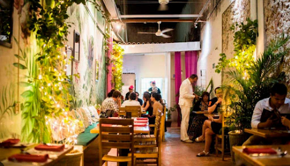

Bem-vindo à Stroggonoferia! O Reino do Strogonoff!
Nossa história começou na cozinha da Vovó Nonô, uma mestra na arte de transformar ingredientes simples em pratos memoráveis. O strogonoff dela era mais que uma refeição; era um evento, um momento de união e alegria. Inspirados por essa paixão e guardando a sete chaves sua receita secreta, decidimos compartilhar essa maravilha com o mundo. Assim nasceu a Stroggonoferia, um lugar onde cada prato conta uma história de carinho, tradição e, claro, muito sabor.
Aqui, cada strogonoff é preparado com ingredientes frescos, selecionados com o mesmo cuidado que a Vovó Nonô tinha, e um toque especial que só a Stroggonoferia oferece. Venha se deliciar e fazer parte da nossa família!
Nossa Filosofia
Missão
Servir o strogonoff mais saboroso e autêntico da cidade, proporcionando momentos de felicidade e satisfação a cada cliente, como se estivessem na casa da Vovó Nonô.
Visão
Ser reconhecida como a principal referência em strogonoffs, expandindo nossa tradição para que mais pessoas possam experimentar a magia da nossa receita.
Valores
Qualidade (ingredientes frescos e preparo cuidadoso), Tradição (respeito à receita original com toques de inovação), Paixão (amor em cada prato servido), Aconchego (ambiente familiar e atendimento caloroso).